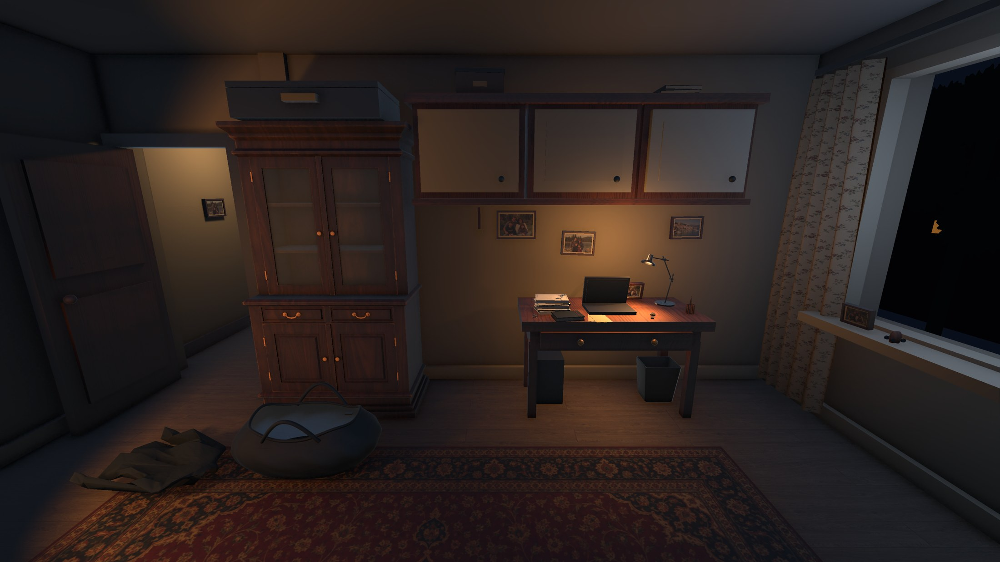
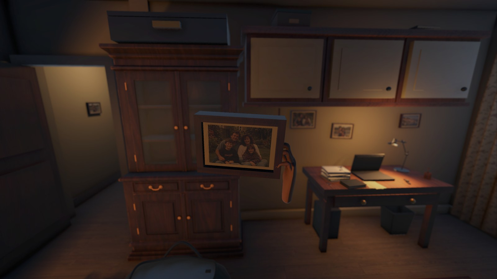
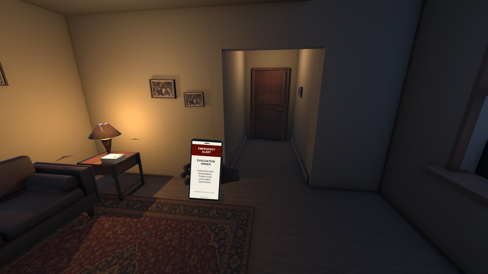
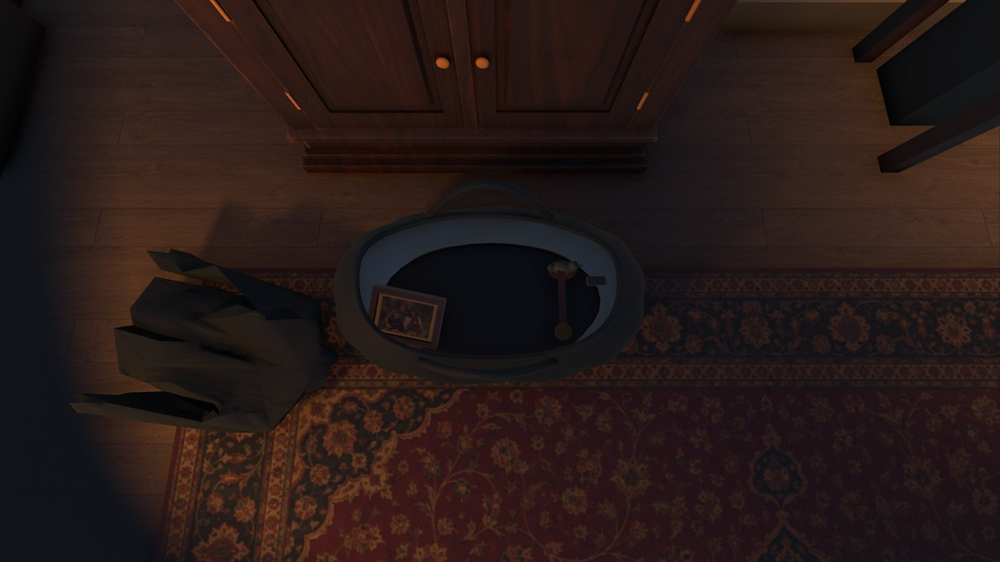
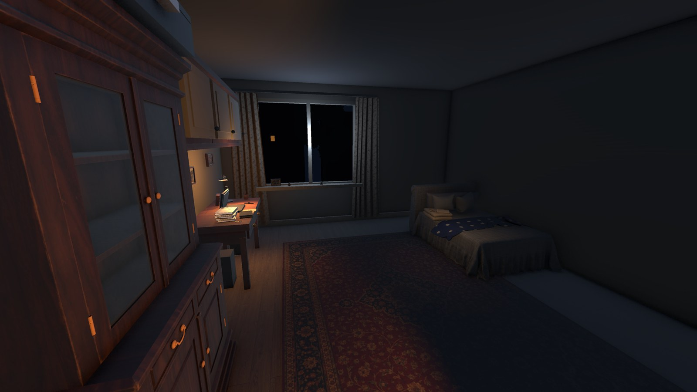

A rough concept · Early VR prototype
Why War?
What do you take
when you have to leave?
A whole life in a room.
A little space in a bag.
This is a rough concept and early prototype, shared to document the idea and explore its potential. Visuals and interactions are still a work in progress.
An ordinary night at home is interrupted by an evacuation order. You return to the bedroom you have grown up in. Everything is familiar. Now you have to decide what can come with you.
In Why War, the story lives in everyday belongings. Picking something up, holding it close, remembering, and putting it down become a way of confronting an impossible question: what makes a home, and what can we carry away?
A quiet, first-person experience. No score. No right answer.

The room softens. A memory comes forward.
02 / The belongings
Six objects.
Room for three.
Each object carries a different part of a life. Raise one to examine it and a memory surfaces through sound.
- 01 Family photograph
- The house, full of life.
- 02 School medal
- A moment of being celebrated.
- 03 Travel souvenir
- A carefree family trip.
- 04 Mom’s knitted sweater
- The care in something handmade.
- 05 House keys
- The familiar ritual of coming home.
- 06 Laptop
- The people who are part of life now.
Documents are already packed. The remaining space is yours to choose.
Remember.
Choose. Reconsider.
The decision is physical. Place a belonging in the bag to take it. Put it back to leave it. You can change your mind until you are ready to close the bag and walk out.

The interruption
One notification changes an ordinary night.

The choices
Three spaces. Six attachments. Nothing is scored.

The departure
The room remains. You decide when to leave.
04 / Inside the early prototype
See the idea in progress.
Rough prototype walkthrough
03:40 · Game audio included
Work-in-progress footage, recorded in Unity using simulated XR input. Includes the notice, all six memories, packing, reconsideration, and the ending.
Download videoAn idea worth
remembering.
Shlok Belgamwar
Concept, design & creative direction
This page documents Why War as a rough creative concept and a point of reference for future work. If the idea inspires something you build, please acknowledge the project and link back to this record.
The prototype was built in Unity for Meta Quest 3, using OpenXR and XR Interaction Toolkit. Development included AI-assisted implementation, Unity sample components, and third-party visual and audio assets.
Suggested credit
Shlok Belgamwar. Why War. Rough VR narrative concept and early prototype, 2026.
Public project record · 26 October 2026
The complete Unity source archive remains private.